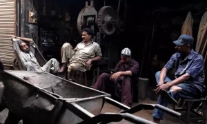

| Thursday, December 28, 2023|14 Jumada Al-Akhirah 1445 |
|---|
| Thursday, December 28, 2023|14 Jumada Al-Akhirah 1445 |
|---|
latest-new| Pakistan| world| bussiness & economy| Sports| life style| videos|
 Court’s stop Imran khan's trial in cipher case what wil be next? |
 Qurashi sent on 14-days judical remand as court reject police plea |
Daughter of Buner, Saveera Parkash shares her plan if elected MPA |
Vidio showing Qurashi being manhandled during rearest goes viral |
Pakistan's Quest for stabilty and progress to continue in 2024 |
Weather to remain cold and dry in most oparts of the couuntry |
The temperature is remain to 2-3 degree celsi;us
according to forcast,the wheather will remain cold and dryaccrose the ountry while upper areas will witness server coldness the maximum temperature of 1-9 digree celsius has been recorded in some partts of khyber pkhtonkhwa while to while 9 - 5 digree celsius mercury recorded in gilgit baltistan The weather will be cold and dry in most of distrricts of province, while it will remain very cold in muree, guliyat and surrounding areas.
As per advisory, the weather will remain cold and dry is most of the districts of the province of the balochistan
where the temperature is anticipated togo down to 1-2 digree celcius.
on the other hand, low intensity has been recorded in sindh province where the murcury is up 16 degrees celcius
some parts off tthe province will witness fog and smoke in early inn the morning and late at night.
PSX gain over 200 points in intraday trads |
 Nadra reserve friday to facilities woman every weak |
Quetta court order to release of kkhwajah shah |
 YHese three couuntrytravel visal free in Turkey |
Dollar falls agaist rupee in a interbankkmarket |
 Massive curruption scandle in solar pannal import uncovered |
Greenback was being was traded at 281.40 n early morninng trade
The dollar fells by53 paisas against the rupee in the interbankk market on friday,insiders saids as the locall currency continuethe appriciate against the foreign currency.
The greenbank was traded at 281.40 n early morninng trade
The rupee gained 27pisa or appriciated by 0.10% on thursday to close at RS 281.93 the STATE BANK OF PAKISTAN reported
THe local currencystarted to make some ground against the dollar interbank and open market affter theinter national monertry fund reached a staff-level agreement with pakistan on a $3-million stand by agreement in july 2023
Illegal gold mining in KP’s Nowshera causing huge losses to national exchequerLocals say an excavator can extract Rs10 million worth gold per month Electricity supply to parts of Pakistan suspendedTransmission lines tripped after blast in a transformer in Kashmore’s Guddu Power Plant EU sees elections as a ‘test’ for Pakistan, plans to send smaller observer group: Ambassador
PML-N, PPP leaders papers approved by ROs |
|
McDonald’s sues Israel boycott movement for $1 million in damagesGerbang Alaf Restaurants alleges BDS Malaysia boycott McDonald's Malaysia led to loss of profit and job cuts |
 Is It Halal or Haram to watch Sijjin movie? Internet is asking |

|
|
court order to release of khwajah shah peacefully without remand. |
Nasruallah planing to visit india soon,claim wife anju |
New year eve 2024 celebration announced in pakistan,see location |
places to watchDubai new year's Eve 2023-24 firework |
 The crown & regal finish shabana mehfooz |
 Solar rising Karachi at snail's pace? |
Ukaas solar initiatives power Karachi |
Nevatic Extands deadlinefor applictaion |
Govt identifies peaple selling cpid patch devices |
 NY time issue open AI micro soft for copyright |